Capítulo 1 EDA
Carguemos las librerias
Muestrame las 5 primeras filas
## longitude latitude housing_median_age total_rooms total_bedrooms population
## 1 -122.23 37.88 41 880 129 322
## 2 -122.22 37.86 21 7099 1106 2401
## 3 -122.24 37.85 52 1467 190 496
## 4 -122.25 37.85 52 1274 235 558
## 5 -122.25 37.85 52 1627 280 565
## households median_income median_house_value ocean_proximity
## 1 126 8.3252 452600 NEAR BAY
## 2 1138 8.3014 358500 NEAR BAY
## 3 177 7.2574 352100 NEAR BAY
## 4 219 5.6431 341300 NEAR BAY
## 5 259 3.8462 342200 NEAR BAYLa estructura de los datos
## 'data.frame': 20640 obs. of 10 variables:
## $ longitude : num -122 -122 -122 -122 -122 ...
## $ latitude : num 37.9 37.9 37.9 37.9 37.9 ...
## $ housing_median_age: num 41 21 52 52 52 52 52 52 42 52 ...
## $ total_rooms : num 880 7099 1467 1274 1627 ...
## $ total_bedrooms : num 129 1106 190 235 280 ...
## $ population : num 322 2401 496 558 565 ...
## $ households : num 126 1138 177 219 259 ...
## $ median_income : num 8.33 8.3 7.26 5.64 3.85 ...
## $ median_house_value: num 452600 358500 352100 341300 342200 ...
## $ ocean_proximity : chr "NEAR BAY" "NEAR BAY" "NEAR BAY" "NEAR BAY" ...Veamos si hay datos faltantes
## NA_longitude NA_latitude NA_housing_median_age NA_total_rooms
## 1 0 0 0 0
## NA_total_bedrooms NA_population NA_households NA_median_income
## 1 207 0 0 0
## NA_median_house_value NA_ocean_proximity
## 1 0 0Otra forma de detectar valores faltantes
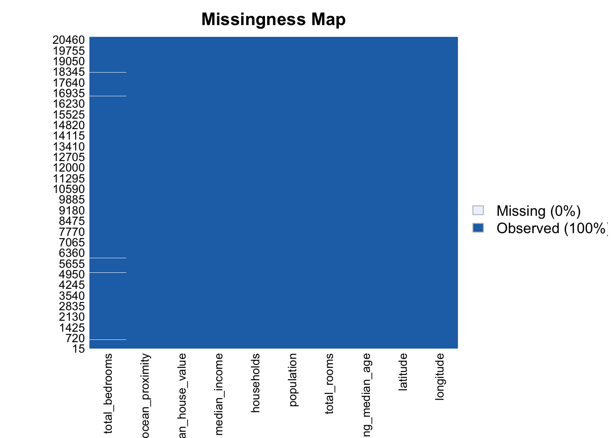
Ahora, hagamos imputación de datos faltantes
Verifiquemos si tiene datos faltantes
## NA_longitude NA_latitude NA_housing_median_age NA_total_rooms
## 1 0 0 0 0
## NA_total_bedrooms NA_population NA_households NA_median_income
## 1 0 0 0 0
## NA_median_house_value NA_ocean_proximity
## 1 0 0Vamos a convertir la variable ocean_proximity en un factor
1.1 Análisis exploratorio de median_house_value (Target)
Realicemos el resumen estadístico de la variable
df %>% summarise(n = length(median_house_value),
media = mean(median_house_value),
sd = sd(median_house_value),
mediana = median(median_house_value),
RIC = IQR(median_house_value),
Q1 = quantile(median_house_value,0.25),
Q3 = quantile(median_house_value,0.75),
minimo = min(median_house_value),
maximo = max(median_house_value),
asi = skewness(median_house_value),
curtosis = kurtosis(median_house_value)
)## n media sd mediana RIC Q1 Q3 minimo maximo asi
## 1 20640 206855.8 115395.6 179700 145125 119600 264725 14999 500001 0.9776922
## curtosis
## 1 3.3275n: hay 20.640 bloques censales (recordemos que cada fila es un bloque, no una casa individual)media: en promedio, el valor mediano de la vivienda de un bloque es de 206.856 dólares americanosmediana: el 50% de los bloques tiene un valor mediano menor o igual a 179.700 dólares americanosRIC: el 50% central de los bloques se reparte a lo largo de una franja de 145.125 dólares de anchoQ1: el 25% de los bloques tiene un valor mediano menor o igual a 119.600 dólares americanosQ3: el 75% de los bloques tiene un valor mediano menor o igual a 264.725 dólares americanosminimo: el bloque más barato tiene un valor mediano de 14.999 dólares americanosmaximo: el bloque más caro tiene un valor mediano de 500.001 dólares americanosasi: 0,98. Asimetría positiva moderadacurtosis: 3,33. Es la curtosis de Pearson, que vale 3 en una normal, así que el exceso es de apenas 0,33
Interpretación. La media (206.856) supera a la mediana (179.700) en unos 27.000 dólares, y eso es justo lo que anticipa una asimetría positiva de 0,98: hay una cola de bloques caros que estira el promedio hacia arriba, mientras la mayoría se concentra en valores más bajos. La media, por tanto, no es un buen resumen de “lo típico” en esta variable; la mediana describe mejor al bloque corriente.
La dispersión es muy alta: una desviación estándar de 115.396 dólares sobre una media de 206.856 da un coeficiente de variación cercano al 56%. Dicho de otro modo, el bloque más caro vale 33 veces lo que el más barato.
Un detalle que condiciona todo el análisis: el máximo es exactamente 500.001 dólares, un número demasiado redondo para ser casual. La variable está censurada: todos los bloques que valían más de medio millón fueron registrados con ese tope. Son 992 bloques, el 4,81% de la muestra.
df %>%
ggplot(aes(x = median_house_value))+
geom_histogram(aes(y = after_stat(density)),
binwidth = 25000,
fill = "#ffc70f",
color = "white",
alpha = 0.6)+
geom_density(color = "darkblue", linewidth =1.2) +
labs(title = 'Distribución del valor medio de las viviendas',
x = 'valor medio de la casa (USD)',
y = 'densidad')+
theme_bw()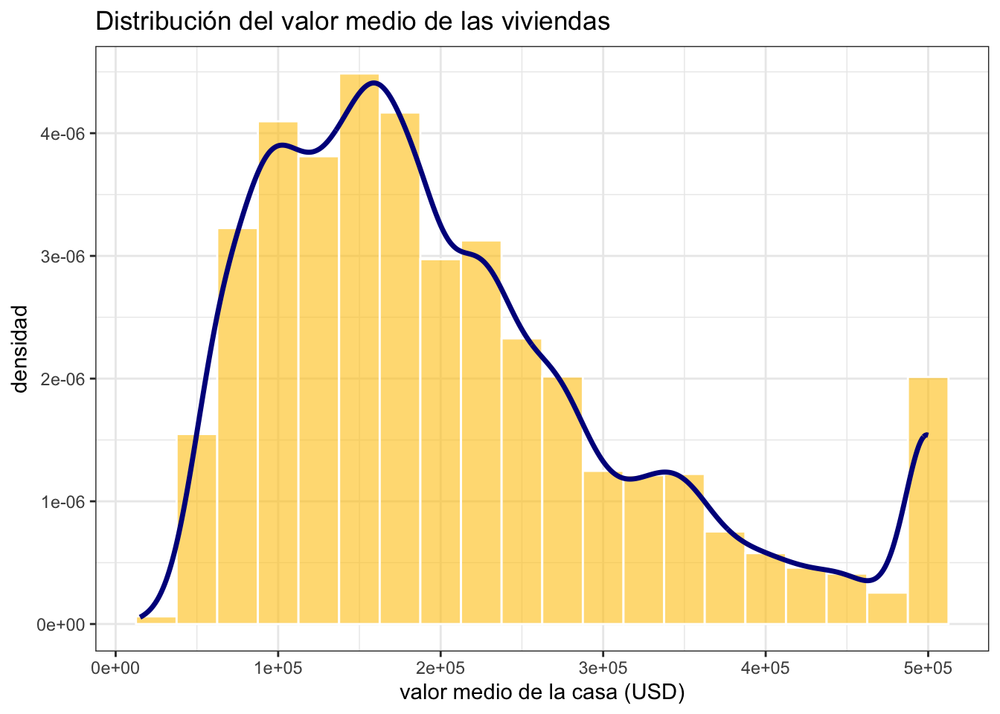
El histograma confirma lo que decían los estadísticos: la distribución es unimodal, con el grueso de los bloques entre 100.000 y 250.000 dólares y una cola derecha larga. Pero además hace visible algo que la tabla no mostraba: la barra aislada en el extremo derecho, en 500.001 dólares. No es una cola que decae suavemente, es un pico artificial creado por el tope de la codificación. Esos 992 bloques no valen medio millón, valen al menos medio millón.
df %>%
ggplot(aes(y = "", x= median_house_value))+
geom_boxplot(fill = "#9a37cc", color = "#5c1427",
outlier.color = 'darkred')+
stat_summary(fun = mean, geom = 'point', shape = 20,
size = 3, color = 'yellow') +
theme_bw()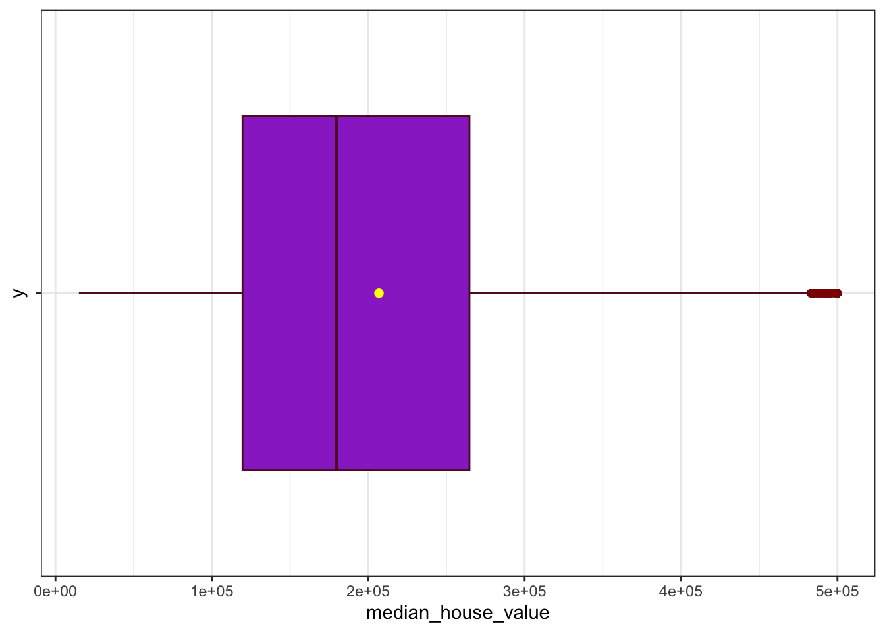
El boxplot cuenta la misma historia desde otro ángulo. El punto amarillo (la media) queda a la derecha de la línea de la mediana, que es la firma gráfica de la asimetría positiva. El bigote superior llega hasta 482.412 dólares (Q3 + 1,5·RIC) y por encima quedan 1.071 bloques marcados como atípicos, de los cuales 992 son exactamente el valor tope.
Conviene ser cuidadoso al llamarlos “atípicos”: no son errores de medición ni casos raros que haya que eliminar, son barrios caros de California. La regla del 1,5·RIC los señala simplemente porque la distribución es asimétrica, y en una distribución asimétrica esa regla siempre marca de más por el lado de la cola larga.
Implicaciones para el modelado. De este análisis salen tres decisiones que habrá que tomar más adelante: (1) el tope de 500.001 sesga cualquier modelo que prediga la parte alta del rango, y lo honesto es o bien excluir esos bloques o bien usar un modelo que trate la censura explícitamente; (2) la asimetría sugiere probar una transformación logarítmica de la respuesta; (3) la mediana y el RIC son las medidas de resumen que deberíamos reportar, no la media y la desviación estándar.
1.2 Análisis de las variables independientes (características)
df %>%
select(where(is.numeric), -median_house_value) %>%
pivot_longer(
cols = everything(),
names_to = 'variable',
values_to = 'valor'
) %>%
group_by(variable) %>%
summarise(n = length(valor),
media = mean(valor),
sd = sd(valor),
mediana = median(valor),
RIC = IQR(valor),
Q1 = quantile(valor,0.25),
Q3 = quantile(valor,0.75),
minimo = min(valor),
maximo = max(valor),
asi = skewness(valor),
curtosis = kurtosis(valor)
)## # A tibble: 8 × 12
## variable n media sd mediana RIC Q1 Q3 minimo maximo
## <chr> <int> <dbl> <dbl> <dbl> <dbl> <dbl> <dbl> <dbl> <dbl>
## 1 househol… 20640 500. 3.82e2 409 3.25e2 280 605 1 6082
## 2 housing_… 20640 28.6 1.26e1 29 1.9 e1 18 37 1 52
## 3 latitude 20640 35.6 2.14e0 34.3 3.78e0 33.9 37.7 32.5 42.0
## 4 longitude 20640 -120. 2.00e0 -118. 3.79e0 -122. -118. -124. -114.
## 5 median_i… 20640 3.87 1.90e0 3.53 2.18e0 2.56 4.74 0.500 15.0
## 6 populati… 20640 1425. 1.13e3 1166 9.38e2 787 1725 3 35682
## 7 total_be… 20640 538. 4.19e2 438 3.46e2 297 643. 1 6445
## 8 total_ro… 20640 2636. 2.18e3 2127 1.70e3 1448. 3148 2 39320
## # ℹ 2 more variables: asi <dbl>, curtosis <dbl>El resumen estadístico de las 8 variables numéricas revela comportamientos muy distintos entre ellas. households y population presentan medias considerablemente superiores a sus medianas (499 vs 409 y 1425 vs 1166, respectivamente), junto con RIC elevados, lo que evidencia asimetría positiva y alta dispersión. total_rooms y total_bedrooms siguen el mismo patrón, con medias muy por encima de la mediana y desviaciones estándar enormes, confirmando lo observado en los boxplots. median_income muestra una distribución más equilibrada (media 3.87, mediana 3.53) con menor dispersión relativa, siendo la variable más homogénea del conjunto. housing_median_age es la más simétrica de todas, con media y mediana muy cercanas (~28.6 y 29) y el RIC más bajo. Finalmente, latitude y longitude corresponden a coordenadas geográficas, por lo que sus estadísticos describen la distribución espacial de los bloques censales en California, con poca variabilidad dado que el estado ocupa un rango geográfico acotado.
df %>%
ggplot(aes(x = "", y= housing_median_age))+
geom_boxplot(fill = "#9a37cc", color = "#5c1427",
outlier.color = 'darkred')+
stat_summary(fun = mean, geom = 'point', shape = 20,
size = 3, color = 'yellow') +
theme_bw() -> p1
df %>%
ggplot(aes(x = "", y= total_rooms))+
geom_boxplot(fill = "#9a37cc", color = "#5c1427",
outlier.color = 'darkred')+
stat_summary(fun = mean, geom = 'point', shape = 20,
size = 3, color = 'yellow') +
theme_bw() -> p2
df %>%
ggplot(aes(x = "", y= total_bedrooms))+
geom_boxplot(fill = "#9a37cc", color = "#5c1427",
outlier.color = 'darkred')+
stat_summary(fun = mean, geom = 'point', shape = 20,
size = 3, color = 'yellow') +
theme_bw() -> p3
p1 + p2 + p3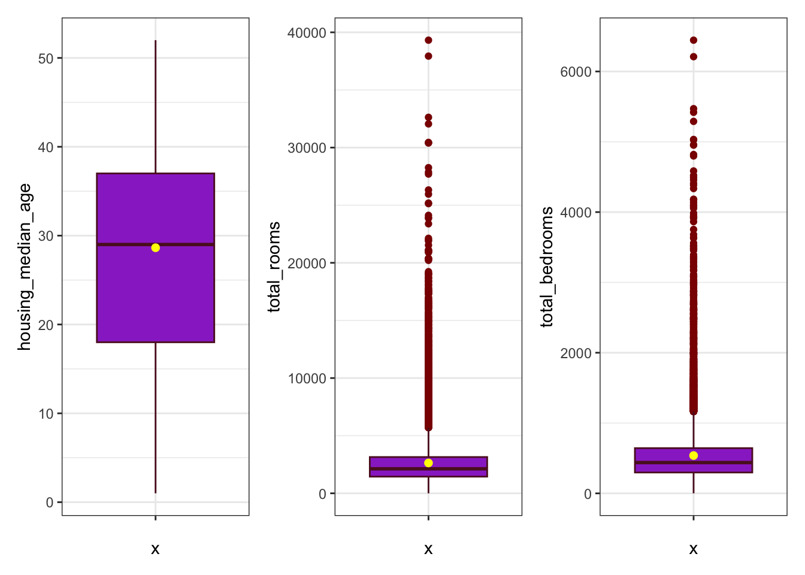
housing_median_age presenta una distribución simétrica con mediana aproximada de 29 años y pocos valores atípicos, siendo la variable más estable de las tres. Por su parte, total_rooms y total_bedrooms muestran una marcada asimetría positiva: la caja está muy comprimida hacia valores bajos y existe una gran cantidad de outliers en la parte superior, lo que indica que la mayoría de los bloques tienen pocas habitaciones pero algunos presentan valores extremadamente altos. Dado este comportamiento, se recomienda aplicar una transformación logarítmica a estas dos variables antes de incluirlas en modelos estadísticos.
Veamos las tres variables que faltan por graficar:
df %>%
ggplot(aes(x = "", y= population))+
geom_boxplot(fill = "#9a37cc", color = "#5c1427",
outlier.color = 'darkred', outlier.alpha = 0.3)+
stat_summary(fun = mean, geom = 'point', shape = 20,
size = 3, color = 'yellow') +
theme_bw() -> p4
df %>%
ggplot(aes(x = "", y= households))+
geom_boxplot(fill = "#9a37cc", color = "#5c1427",
outlier.color = 'darkred', outlier.alpha = 0.3)+
stat_summary(fun = mean, geom = 'point', shape = 20,
size = 3, color = 'yellow') +
theme_bw() -> p5
df %>%
ggplot(aes(x = "", y= median_income))+
geom_boxplot(fill = "#9a37cc", color = "#5c1427",
outlier.color = 'darkred', outlier.alpha = 0.3)+
stat_summary(fun = mean, geom = 'point', shape = 20,
size = 3, color = 'yellow') +
theme_bw() -> p6
p4 + p5 + p6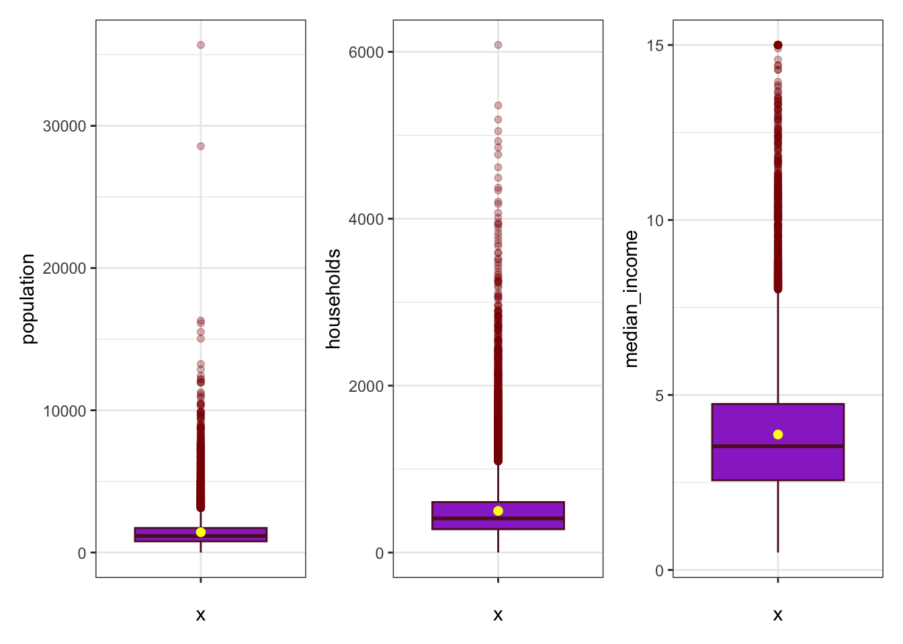
population y households repiten el patrón de total_rooms y
total_bedrooms: caja aplastada contra el suelo y una nube de atípicos por
arriba (1.196 y 1.220 casos respectivamente). El caso extremo es un bloque con
35.682 habitantes, veinticinco veces la media. median_income es distinta: su
caja es simétrica y solo tiene 681 atípicos, todos por el lado alto, con un tope
llamativo en 15 (esta variable también está censurada, igual que la respuesta).
Los histogramas permiten ver la forma completa de cada distribución, no solo sus cuartiles:
df %>%
select(housing_median_age, total_rooms, total_bedrooms,
population, households, median_income) %>%
pivot_longer(cols = everything(),
names_to = 'variable', values_to = 'valor') %>%
ggplot(aes(x = valor))+
geom_histogram(bins = 40, fill = "#008B8B", color = "white", alpha = 0.85)+
facet_wrap(~ variable, scales = 'free', ncol = 2)+
labs(x = NULL, y = 'frecuencia')+
theme_bw()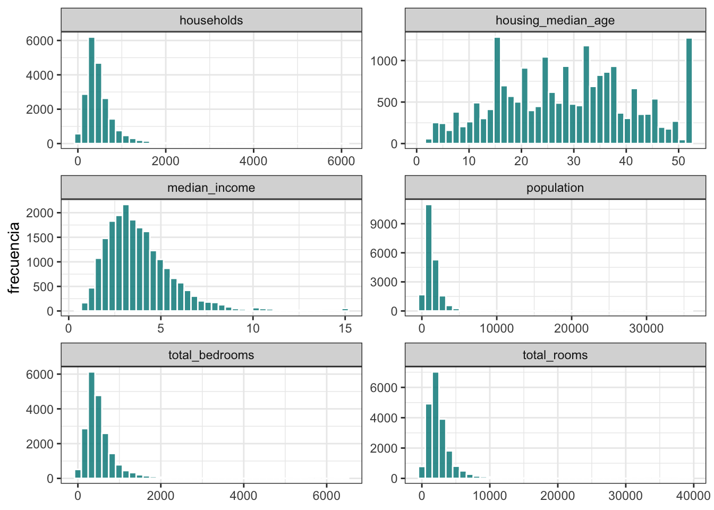
Puestas una al lado de la otra se distinguen tres comportamientos:
- Cuatro variables de tamaño (
total_rooms,total_bedrooms,population,households) con asimetrías positivas fuertes: entre 3,41 y 4,94, y curtosis de hasta 76,5 enpopulation. Todas describen lo mismo desde ángulos distintos —cuán grande es el bloque— y todas piden transformación logarítmica. median_income, con asimetría 1,65: se aleja de la normal, pero mucho menos, y el pico artificial del extremo derecho es el tope en 15.housing_median_age, con asimetría 0,06 y curtosis 2,20: casi simétrica y algo más plana que una normal. Su pico en 52 años es otro tope de codificación: todo lo construido antes de 1938 se registró como “52”.
Las coordenadas geográficas merecen mirarse aparte, porque un histograma de
latitude no dice gran cosa. Graficadas juntas dibujan el mapa del estado:
df %>%
ggplot(aes(x = longitude, y = latitude))+
geom_point(alpha = 0.1, color = 'darkblue', size = 0.6)+
coord_quickmap()+
labs(x = 'Longitud', y = 'Latitud')+
theme_bw()+
facet_wrap(~'Distribución geográfica de los bloques censales')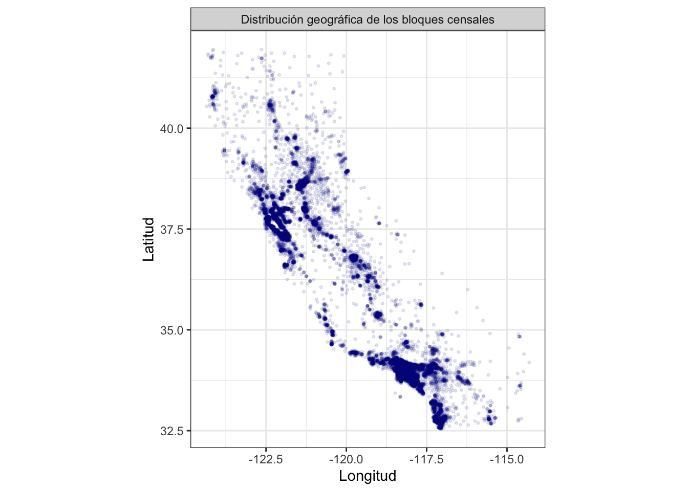
Se reconoce la silueta de California y, sobre todo, las dos manchas densas que corresponden al Área de la Bahía (arriba) y a Los Ángeles–San Diego (abajo). Los bloques no están repartidos de forma uniforme por el territorio, sino concentrados en las áreas metropolitanas de la costa: la bimodalidad de estas dos variables es poblacional, no un defecto de los datos.
Ahora vemos la variable ocean_proximity
df %>%
count(ocean_proximity, name = "n") %>%
mutate(Porcentaje = round((n / sum(n)) * 100,2),
Variable = 'ocean_proximity',
Categoria = as.character(ocean_proximity)) %>% select(Variable,Categoria,n,Porcentaje) -> tabla_ocean
tabla_ocean## Variable Categoria n Porcentaje
## 1 ocean_proximity <1H OCEAN 9136 44.26
## 2 ocean_proximity INLAND 6551 31.74
## 3 ocean_proximity ISLAND 5 0.02
## 4 ocean_proximity NEAR BAY 2290 11.09
## 5 ocean_proximity NEAR OCEAN 2658 12.88tabla_ocean_b <- df %>%
count(ocean_proximity, name = "n") %>%
mutate(
Porcentaje = round(n / sum(n) * 100, 1),
Etiqueta = paste0(n, " (", Porcentaje, "%)"))
tabla_ocean_b %>%
ggplot(aes(x = ocean_proximity, y = n))+
geom_col(fill = "#008B8B", width = 0.6)+
geom_text(aes(label = Etiqueta), vjust=-0.5, size = 4.5)+
facet_wrap(~'Distribución de la variable ocean_proximity')+
scale_y_continuous(expand = expansion(mult = c(0,0.15)))+
theme_bw()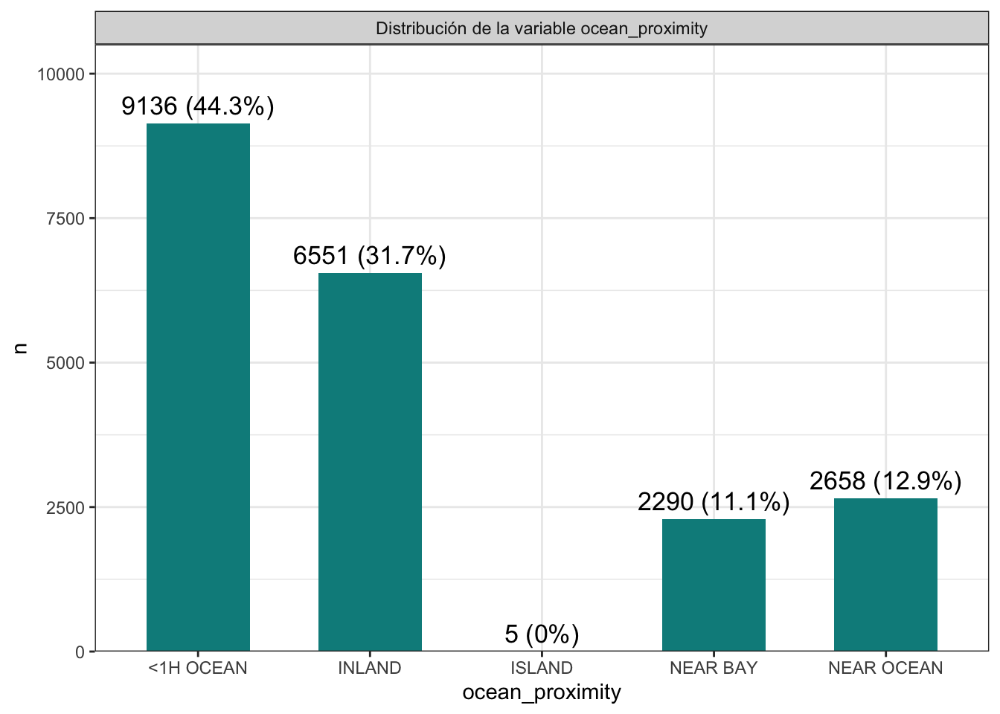
1.3 Análisis exploratorio bivariado
df %>%
ggplot(aes(x = median_income, y = median_house_value))+
geom_point(alpha = 0.4, color = 'darkblue')+
labs(y = 'Valor medio de la viienda',
x = 'Ingreso medio')+
theme_bw()+
facet_grid(. ~'Dispersión entre ingreso medio y el valor medio de la vivienda')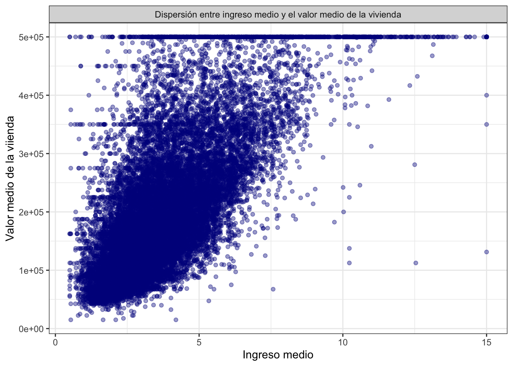
La relación es positiva y clara: a mayor ingreso mediano del bloque, mayor valor de la vivienda. Es, con diferencia, la relación más fuerte del conjunto de datos. En la nube se distinguen además tres artefactos:
- La línea horizontal en 500.001, que ya conocemos: el tope de la respuesta.
- Líneas horizontales más tenues alrededor de 450.000 y 350.000, que sugieren algún redondeo en la codificación original.
- La línea vertical en 15, el tope de
median_income.
La dispersión también crece con el ingreso (heterocedasticidad): entre los bloques pobres los valores se agrupan, mientras que entre los ricos se abren enormemente. Un modelo lineal simple violaría aquí el supuesto de varianza constante.
Agrupando por quintiles de ingreso se ve la progresión sin la nube de puntos encima:
df %>%
mutate(quintil = ntile(median_income, 5)) %>%
ggplot(aes(x = factor(quintil), y = median_house_value))+
geom_boxplot(fill = "#9a37cc", color = "#5c1427",
outlier.color = 'darkred', outlier.alpha = 0.2)+
stat_summary(fun = mean, geom = 'point', shape = 20,
size = 3, color = 'yellow')+
labs(x = 'Quintil de ingreso mediano',
y = 'Valor medio de la vivienda (USD)')+
theme_bw()+
facet_grid(. ~'Valor de la vivienda por quintil de ingreso')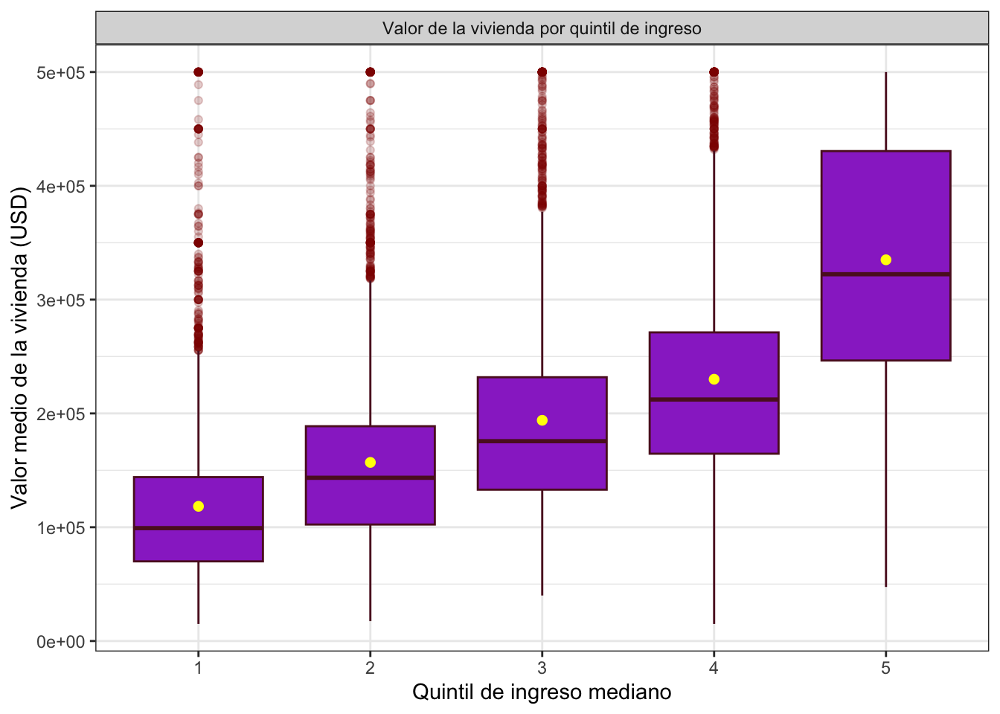
La mediana sube de forma monótona en cada escalón: 99.200 → 143.450 → 175.600 → 212.200 → 322.300 dólares. El salto del cuarto al quinto quintil (110.100 dólares) es más del doble que cualquier otro, así que la relación no es del todo lineal: se acelera en la parte alta de la distribución de ingresos.
Ahora comparemos el valor medio de la vivienda según la aproximidad al oceano.
df %>%
group_by(ocean_proximity) %>%
summarise(n = length(median_house_value),
media = mean(median_house_value),
sd = sd(median_house_value),
mediana = median(median_house_value),
RIC = IQR(median_house_value),
Q1 = quantile(median_house_value,0.25),
Q3 = quantile(median_house_value,0.75),
minimo = min(median_house_value),
maximo = max(median_house_value),
asi = skewness(median_house_value),
curtosis = kurtosis(median_house_value)
)## # A tibble: 5 × 12
## ocean_proximity n media sd mediana RIC Q1 Q3 minimo maximo
## <fct> <int> <dbl> <dbl> <dbl> <dbl> <dbl> <dbl> <dbl> <dbl>
## 1 <1H OCEAN 9136 2.40e5 1.06e5 214850 125000 164100 289100 17500 500001
## 2 INLAND 6551 1.25e5 7.00e4 108500 71450 77500 148950 14999 500001
## 3 ISLAND 5 3.80e5 8.06e4 414700 150000 300000 450000 287500 450000
## 4 NEAR BAY 2290 2.59e5 1.23e5 233800 183200 162500 345700 22500 500001
## 5 NEAR OCEAN 2658 2.49e5 1.22e5 229450 172750 150000 322750 22500 500001
## # ℹ 2 more variables: asi <dbl>, curtosis <dbl>Veamos un gráfico de cajas y bigotes:
df %>%
ggplot(aes(x = ocean_proximity, y = median_house_value))+
geom_boxplot(fill = "#9a37cc", color = "#5c1427",
outlier.color = 'darkred', outlier.alpha = 0.3)+
stat_summary(fun = mean, geom = 'point', shape = 20,
size = 3, color = 'yellow')+
labs(x = 'Proximidad al océano',
y = 'Valor medio de la vivienda (USD)')+
theme_bw()+
facet_grid(. ~'Valor medio de la vivienda según la proximidad al océano')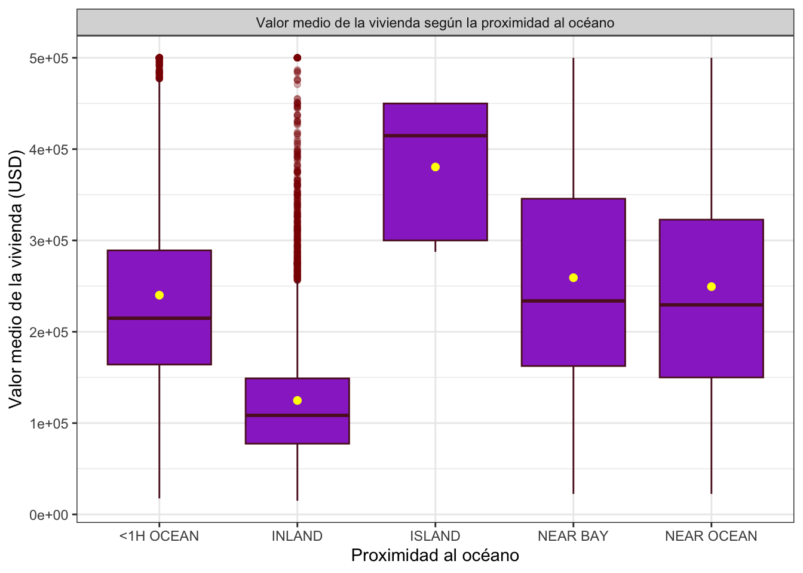
Aquí lo importante no es el orden de las cinco categorías, sino que una de
ellas se separa del resto. INLAND tiene una mediana de 108.500 dólares,
mientras que las tres categorías costeras masivas rondan todas los 215.000–235.000
(<1H OCEAN 214.850, NEAR OCEAN 229.450, NEAR BAY 233.800) y son
prácticamente indistinguibles entre sí. Es decir: la variable no funciona como
una gradación de cercanía al mar, sino como una dicotomía interior/costa.
ISLAND aparece como la categoría más cara (mediana 414.700), pero tiene solo
5 bloques de los 20.640. Con esa n, su caja no es una estimación en la que
se pueda confiar y conviene no sacar conclusiones de ella.
Veamos ahora la relación con la edad de las viviendas:
df %>%
mutate(tramo = cut(housing_median_age,
breaks = c(0, 10, 20, 30, 40, 52),
labels = c('1-10', '11-20', '21-30', '31-40', '41-52'))) %>%
ggplot(aes(x = tramo, y = median_house_value))+
geom_boxplot(fill = "#9a37cc", color = "#5c1427",
outlier.color = 'darkred', outlier.alpha = 0.2)+
stat_summary(fun = mean, geom = 'point', shape = 20,
size = 3, color = 'yellow')+
labs(x = 'Edad mediana de la vivienda (años)',
y = 'Valor medio de la vivienda (USD)')+
theme_bw()+
facet_grid(. ~'Valor de la vivienda por tramo de antigüedad')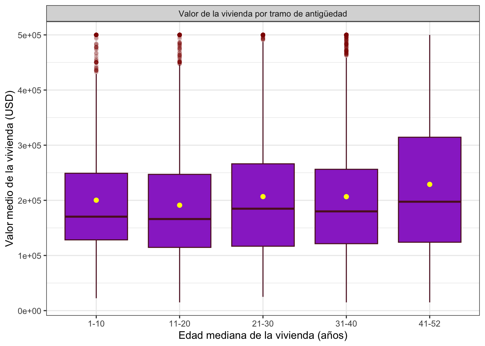
El resultado es contraintuitivo: las viviendas más antiguas son las más caras. La mediana pasa de 170.400 dólares en los bloques de 1 a 10 años a 197.500 en los de 41 a 52. No es que la vejez añada valor, es que los barrios antiguos de California son los céntricos y costeros, mientras que la construcción reciente está en la periferia y el interior. La edad está actuando como un indicador indirecto de la ubicación.
La ubicación se ve mejor directamente sobre el mapa:
df %>%
ggplot(aes(x = longitude, y = latitude, color = median_house_value))+
geom_point(alpha = 0.4, size = 0.7)+
scale_color_viridis_c(option = 'plasma', name = 'Valor (USD)')+
coord_quickmap()+
labs(x = 'Longitud', y = 'Latitud')+
theme_bw()+
facet_wrap(~'Valor de la vivienda sobre el mapa de California')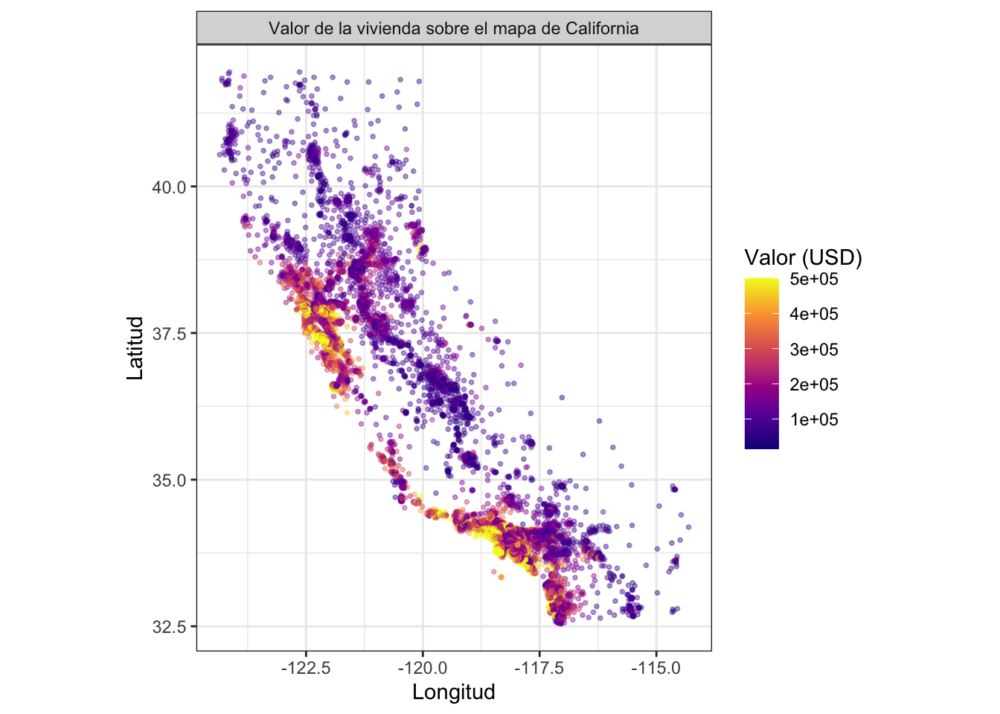
El patrón geográfico es rotundo: la franja costera se ilumina y el interior
(el Valle Central, el desierto del sureste) queda oscuro. Los dos focos más
caros coinciden con la Bahía de San Francisco y la costa de Los Ángeles. Esto
explica por qué latitude y longitude tienen correlaciones lineales bajas con
el precio pese a ser tan informativas: el efecto de la ubicación no es
“más al norte, más caro”, sino “más cerca del mar, más caro”, y eso ninguna
recta sobre una sola coordenada lo captura.
1.3.1 Relaciones entre las propias variables independientes
Hasta aquí hemos comparado cada característica con la respuesta. Igual de importante es ver cómo se relacionan entre sí, porque variables que miden lo mismo causan problemas al modelar:
df %>%
ggplot(aes(x = households, y = total_rooms))+
geom_point(alpha = 0.2, color = 'darkblue', size = 0.7)+
geom_smooth(method = 'lm', se = FALSE, color = 'darkred')+
labs(x = 'Número de hogares', y = 'Número total de habitaciones')+
theme_bw()+
facet_grid(. ~'Hogares frente a habitaciones totales')## `geom_smooth()` using formula = 'y ~ x'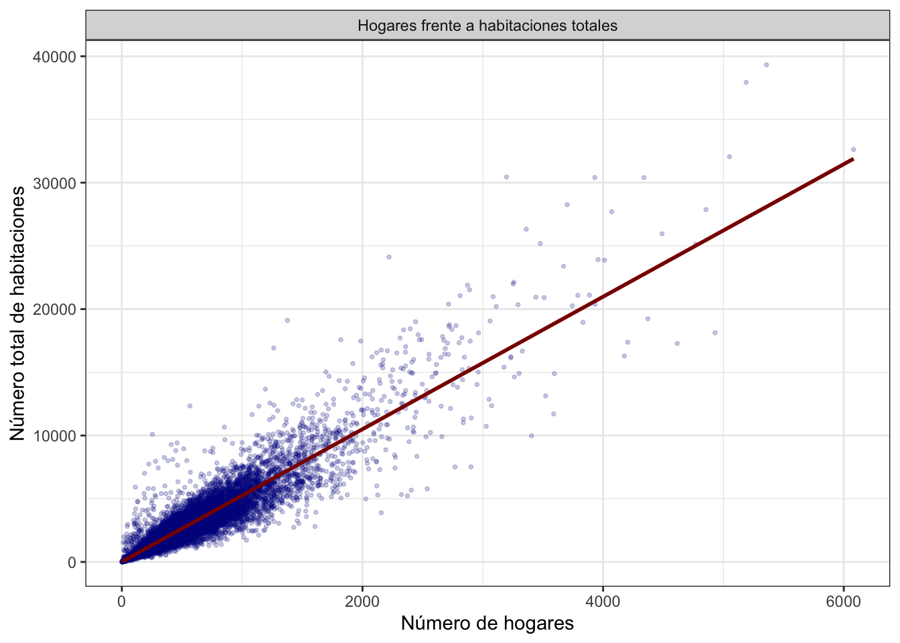
Los puntos caen casi sobre una recta. Es lo esperable —más hogares implican más
habitaciones— pero significa que ambas variables aportan casi la misma
información. Las cuatro variables de tamaño (total_rooms, total_bedrooms,
population, households) forman un bloque redundante que trataremos en la
sección de correlación.
Por último, conviene comprobar si el efecto de la ubicación es independiente del ingreso o si ambas cosas van juntas:
df %>%
ggplot(aes(x = ocean_proximity, y = median_income))+
geom_boxplot(fill = "#008B8B", color = "#5c1427",
outlier.color = 'darkred', outlier.alpha = 0.2)+
stat_summary(fun = mean, geom = 'point', shape = 20,
size = 3, color = 'yellow')+
labs(x = 'Proximidad al océano', y = 'Ingreso mediano')+
theme_bw()+
facet_grid(. ~'Ingreso mediano según la proximidad al océano')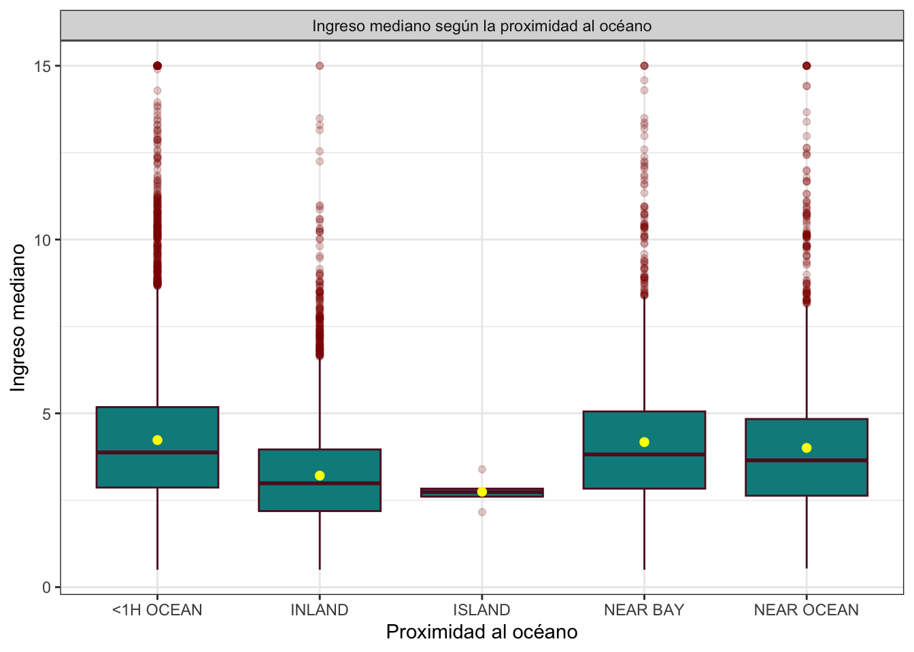
Los bloques del interior son también, en promedio, más pobres. La correlación entre “estar en la costa” y el ingreso mediano es de 0,24: existe, pero es moderada. Eso quiere decir que ubicación e ingreso no son la misma variable disfrazada y que cada una aporta información propia sobre el precio.
1.4 Paquete GGally
## `stat_bin()` using `bins = 30`. Pick better value `binwidth`.
## `stat_bin()` using `bins = 30`. Pick better value `binwidth`.
## `stat_bin()` using `bins = 30`. Pick better value `binwidth`.
## `stat_bin()` using `bins = 30`. Pick better value `binwidth`.
## `stat_bin()` using `bins = 30`. Pick better value `binwidth`.
## `stat_bin()` using `bins = 30`. Pick better value `binwidth`.
## `stat_bin()` using `bins = 30`. Pick better value `binwidth`.
## `stat_bin()` using `bins = 30`. Pick better value `binwidth`.
## `stat_bin()` using `bins = 30`. Pick better value `binwidth`.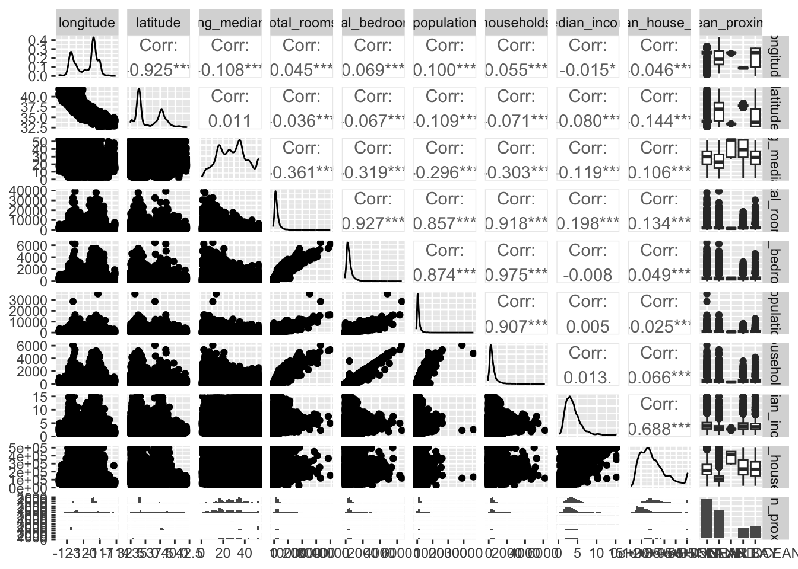
1.5 Correlación
ggpairs() nos ha dado todos los coeficientes de golpe, pero en una rejilla
difícil de leer. Vamos a extraer solo la matriz de correlaciones y a
representarla como un mapa de calor:
matriz_cor <- df %>%
select(where(is.numeric)) %>%
cor()
matriz_cor %>%
as.data.frame() %>%
rownames_to_column('variable1') %>%
pivot_longer(cols = -variable1,
names_to = 'variable2', values_to = 'r') %>%
ggplot(aes(x = variable1, y = variable2, fill = r))+
geom_tile(color = 'white')+
geom_text(aes(label = round(r, 2)), size = 3)+
scale_fill_gradient2(low = "#5c1427", mid = 'white', high = "#008B8B",
midpoint = 0, limits = c(-1, 1))+
labs(x = NULL, y = NULL)+
theme_bw()+
theme(axis.text.x = element_text(angle = 45, hjust = 1))+
facet_wrap(~'Matriz de correlaciones de Pearson')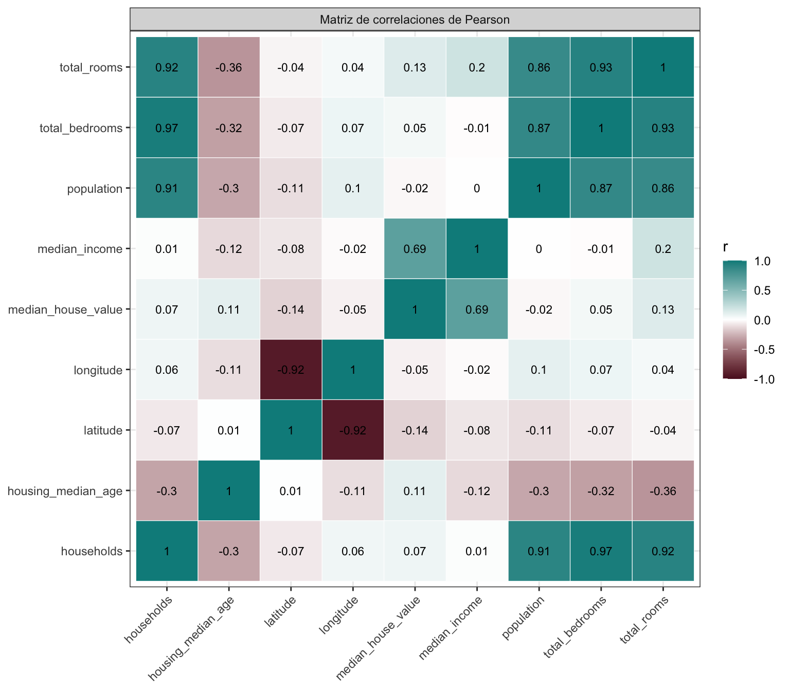
Y ordenamos las correlaciones con la variable respuesta:
## median_house_value median_income total_rooms housing_median_age
## 1.000 0.688 0.134 0.106
## households total_bedrooms population longitude
## 0.066 0.049 -0.025 -0.046
## latitude
## -0.144Interpretación. La matriz deja ver tres cosas.
Primera: una sola variable predice de verdad. median_income correlaciona
0,688 con el precio. La siguiente en la lista, total_rooms, se queda en 0,134,
y de ahí para abajo todo es ruido (households 0,066, total_bedrooms 0,049,
population −0,025). Por sí sola, la recta del ingreso explica el 47% de la
varianza del precio.
Segunda: hay un bloque de variables redundantes. total_rooms,
total_bedrooms, population y households correlacionan entre sí entre 0,86
y 0,97 (households con total_bedrooms llega a 0,97). Si se regresa
households sobre las otras tres se obtiene un R² de 0,963: la variable es
prácticamente una combinación lineal de sus compañeras. Meterlas las cuatro en
un modelo lineal produce multicolinealidad severa, con coeficientes
inestables y de signo impredecible. Hay que quedarse con una, combinarlas, o
transformarlas en razones, que es lo que haremos en la sección siguiente.
Tercera: las correlaciones bajas no significan variables inútiles. latitude
marca −0,144 y longitude −0,046, pero el mapa de la sección anterior mostraba
que la ubicación importa muchísimo. Lo que ocurre es que la correlación de
Pearson solo mide relación lineal, y el efecto geográfico tiene forma de
“cerca de la costa”, no de “hacia el norte”. Entre ellas, además, correlacionan
−0,92, porque California es un estado alargado en diagonal: al avanzar hacia el
norte se avanza también hacia el oeste.
Una advertencia sobre el 0,688 del ingreso: está inflado por el tope de la respuesta. Si excluimos los 992 bloques censurados, la correlación baja a 0,647.
1.6 Ingeniería de características
El análisis anterior nos deja un diagnóstico claro: tenemos cuatro variables de
tamaño redundantes entre sí y poco correlacionadas con el precio. El problema es
que total_rooms mide cuán grande es el bloque, no cuán buenas son sus
viviendas. Un bloque con 5.000 habitaciones puede ser un barrio de mansiones o
un conjunto de pisos pequeños; el número absoluto no distingue.
La solución es convertir esos totales en razones per cápita, que sí describen la calidad de la vivienda:
df %>%
mutate(
rooms_per_household = total_rooms / households,
bedrooms_per_room = total_bedrooms / total_rooms,
population_per_household = population / households,
costa = factor(ifelse(ocean_proximity == 'INLAND', 'interior', 'costa'))
) -> dferooms_per_household: habitaciones por hogar. Mide el tamaño de la vivienda típica del bloque.bedrooms_per_room: qué proporción de las habitaciones son dormitorios. Mide el tipo de vivienda: un valor bajo indica casas con salones, estudios y espacios comunes amplios; uno alto, viviendas pequeñas donde casi todo es dormitorio.population_per_household: personas por hogar. Mide el hacinamiento.costa: recoge la dicotomía interior/costa que descubrimos en el boxplot deocean_proximity, en lugar de las cinco categorías originales.
Veamos su resumen estadístico:
dfe %>%
select(rooms_per_household, bedrooms_per_room, population_per_household) %>%
pivot_longer(cols = everything(),
names_to = 'variable', values_to = 'valor') %>%
group_by(variable) %>%
summarise(media = mean(valor),
mediana = median(valor),
sd = sd(valor),
minimo = min(valor),
maximo = max(valor),
asi = skewness(valor))## # A tibble: 3 × 7
## variable media mediana sd minimo maximo asi
## <chr> <dbl> <dbl> <dbl> <dbl> <dbl> <dbl>
## 1 bedrooms_per_room 0.214 0.203 0.0698 0.0459 3.49 9.28
## 2 population_per_household 3.07 2.82 10.4 0.692 1243. 97.6
## 3 rooms_per_household 5.43 5.23 2.47 0.846 142. 20.7Y su distribución (recortando las colas extremas para poder ver algo):
dfe %>%
select(rooms_per_household, bedrooms_per_room, population_per_household) %>%
pivot_longer(cols = everything(),
names_to = 'variable', values_to = 'valor') %>%
group_by(variable) %>%
filter(valor <= quantile(valor, 0.99)) %>%
ggplot(aes(x = valor))+
geom_histogram(bins = 40, fill = "#008B8B", color = 'white', alpha = 0.85)+
facet_wrap(~ variable, scales = 'free', ncol = 3)+
labs(x = NULL, y = 'frecuencia',
caption = 'Se ha recortado el 1% superior de cada variable para la visualización')+
theme_bw()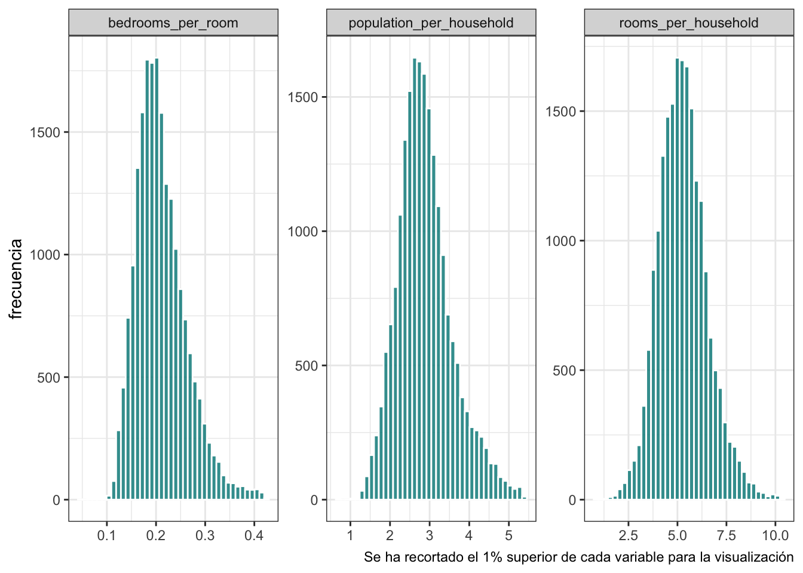
Los valores centrales son razonables y fáciles de leer: la vivienda típica californiana de 1990 tenía 5,2 habitaciones, de las cuales alrededor del 20% eran dormitorios, y la habitaban 2,8 personas.
Los máximos, en cambio, delatan datos problemáticos: 141,9 habitaciones por hogar, 1.243 personas por hogar y una proporción de dormitorios de 3,49 (un valor imposible, porque los dormitorios son un subconjunto de las habitaciones). Son bloques con poquísimos hogares donde la razón se dispara, o directamente errores. En total, 69 bloques superan las 20 habitaciones por hogar, 37 superan las 10 personas por hogar y 10 tienen más dormitorios que habitaciones. Antes de modelar habría que revisarlos o recortarlos.
1.6.1 ¿Sirven las nuevas variables?
dfe %>%
select(median_house_value, rooms_per_household, bedrooms_per_room,
population_per_household, total_rooms, total_bedrooms,
population, households) %>%
cor() %>%
.[, 'median_house_value'] %>%
sort(decreasing = TRUE) %>%
round(3)## median_house_value rooms_per_household total_rooms
## 1.000 0.152 0.134
## households total_bedrooms population_per_household
## 0.066 0.049 -0.024
## population bedrooms_per_room
## -0.025 -0.220Comparando cada razón con el total del que procede:
| Variable original | r | Nueva variable | r |
|---|---|---|---|
total_rooms |
0,134 | rooms_per_household |
0,152 |
total_bedrooms |
0,049 | bedrooms_per_room |
−0,220 |
population |
−0,025 | population_per_household |
−0,024 |
bedrooms_per_room es el caso más llamativo: pasa de una variable inservible
(0,049) a la mejor característica estructural del conjunto (−0,220), y
además con un signo interpretable: cuantos más dormitorios por habitación,
más barata la vivienda. Tiene sentido, porque una proporción baja de dormitorios
implica casas con espacios adicionales, y eso es un lujo.
population_per_household parece no aportar nada (−0,024), pero es un
espejismo causado por los valores extremos: su correlación de Spearman —que usa
rangos y por tanto es inmune a ellos— es de −0,257, y si recortamos el 1%
superior, la de Pearson sube a −0,28. La variable sí informa: a más
hacinamiento, menor precio. Solo hay que limpiarla antes.
Este contraste entre Pearson y Spearman merece mirarse en todas las variables:
dfe %>%
select(median_house_value, median_income, rooms_per_household,
bedrooms_per_room, population_per_household, total_rooms,
housing_median_age, latitude) %>%
cor(method = 'spearman') %>%
.[, 'median_house_value'] %>%
sort(decreasing = TRUE) %>%
round(3)## median_house_value median_income rooms_per_household
## 1.000 0.677 0.263
## total_rooms housing_median_age latitude
## 0.206 0.075 -0.166
## population_per_household bedrooms_per_room
## -0.257 -0.330Por rangos, las tres razones nuevas ocupan los puestos 2, 3 y 4 del ranking, justo detrás del ingreso. Ninguna variable original lo conseguía.
Veamos gráficamente la más prometedora:
dfe %>%
mutate(quintil = ntile(bedrooms_per_room, 5)) %>%
ggplot(aes(x = factor(quintil), y = median_house_value))+
geom_boxplot(fill = "#9a37cc", color = "#5c1427",
outlier.color = 'darkred', outlier.alpha = 0.2)+
stat_summary(fun = mean, geom = 'point', shape = 20,
size = 3, color = 'yellow')+
labs(x = 'Quintil de proporción de dormitorios',
y = 'Valor medio de la vivienda (USD)')+
theme_bw()+
facet_grid(. ~'Valor de la vivienda por proporción de dormitorios')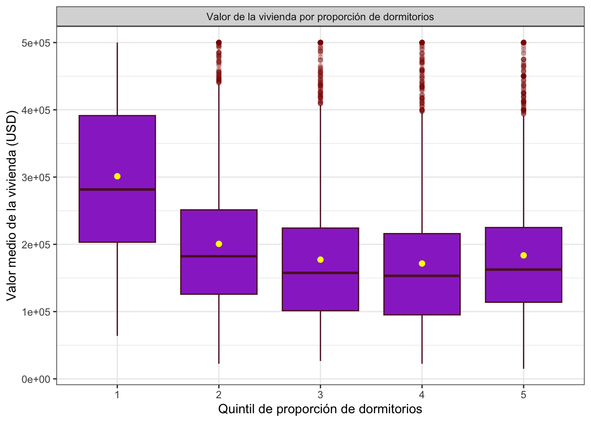
El primer quintil (menos del 16,9% de dormitorios) tiene una mediana de 281.550 dólares, muy por encima de los demás. A partir del segundo quintil la relación se aplana en torno a los 150.000–180.000. O sea: la variable no discrimina a lo largo de todo su recorrido, sino que identifica un grupo caro en el extremo bajo. Esto sugiere usarla en tramos, no como variable continua.
Por último, comprobemos cuánta varianza explica cada conjunto de variables:
r2 <- function(formula) round(summary(lm(formula, data = dfe))$r.squared, 3)
tibble(
modelo = c('Solo ingreso',
'Ingreso + variables originales',
'Ingreso + razones nuevas + edad',
'Ingreso + razones nuevas + edad + costa',
'Todas las variables'),
R2 = c(
r2(median_house_value ~ median_income),
r2(median_house_value ~ median_income + total_rooms + total_bedrooms +
population + households + housing_median_age),
r2(median_house_value ~ median_income + rooms_per_household +
bedrooms_per_room + population_per_household + housing_median_age),
r2(median_house_value ~ median_income + rooms_per_household +
bedrooms_per_room + population_per_household + housing_median_age +
costa),
r2(median_house_value ~ median_income + total_rooms + total_bedrooms +
population + households + housing_median_age + rooms_per_household +
bedrooms_per_room + population_per_household + costa)
)
)## # A tibble: 5 × 2
## modelo R2
## <chr> <dbl>
## 1 Solo ingreso 0.473
## 2 Ingreso + variables originales 0.566
## 3 Ingreso + razones nuevas + edad 0.531
## 4 Ingreso + razones nuevas + edad + costa 0.6
## 5 Todas las variables 0.634Conviene leer esta tabla con honestidad. El ingreso solo ya explica el 47,3% de la varianza. Añadir las variables originales sube al 56,6%, y sustituirlas por las razones nuevas da 53,1%: algo menos. Las razones ganan variable a variable, pero las cuatro originales juntas, aun siendo redundantes, capturan información de tamaño que las razones descartan.
La aportación grande viene de otro lado: añadir costa al modelo de razones lo
lleva de 53,1% a 60,0%. Una sola variable binaria, construida a partir de un
patrón que vimos en un boxplot, aporta más que todo el trabajo con razones. Y el
modelo completo llega al 63,4%, apenas dos décimas por encima del que usa las
originales más costa (63,2%).
Conclusión. Las razones per cápita no son un atajo para mejorar el R², sino
para obtener un modelo interpretable: sustituyen cuatro variables
correlacionadas al 0,9 —cuyos coeficientes serían inestables e ilegibles— por
tres medidas con significado propio (tamaño de vivienda, tipo de vivienda,
hacinamiento) y correlaciones entre sí mucho más bajas. A igualdad aproximada de
capacidad predictiva, eso es lo que interesa en un modelo explicativo. Y el
hallazgo más rentable del capítulo no salió de ninguna transformación
sofisticada, sino de mirar un gráfico de cajas y notar que INLAND se separaba
del resto.